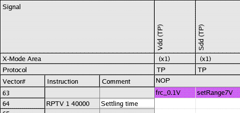

Inserting sequencer instructions and comments
To insert sequencer instructions and comments into the pattern you use the Pattern Editor.
About this task
Note For the DC signal pins (Sdd, Sdd2), the interval between the vector
activating the Set Measurement Range event (setMeasureRange) and the vector
activating the measure event must be at least 20 µs. For the power pins (Vdd, Vdd2), the
interval between the vector activating the setForceValue event and the vector activating
the measure event must be at least 250 µs for a DPS32 pin and 2 ms for a VI32 pin. You
can prolong the interval by increasing the repeat count of the RPTV sequencer
instruction.
Typically you determine the minimum repeat count experimentally.
Note The delay between request and execution of an event takes approximately 11 ±2 tester
clock cycles plus 500 ns (independent of the tester period).
Before you begin
The pattern must be defined.
Procedures
Inserting the first sequencer instruction
- In the Pattern Editor, go to row 64, right-click in the Instruction column, and select Insert Instruction.
- In the list, double-click
RPTV 1. - To complete the instruction, type the repeat count: 40000
Inserting a comment for the sequencer instruction
- In the Pattern Editor, in row 64, click in the Comment column.
- Type the comment text: Settling time

- Go to row 201 and complete the sequencer instructions and comments according to the table in Creating the main pattern for a dynamic DC test.
Results
This creates the following block of sequencer instructions in the pattern file.
... SQPG 0,STVA,0,,SM,(@) SQPG 1,STSA,,,SM,(@) SQPG 2,GENV,64,,SM,(@) SQPG 3,RPTV,1,40000,SM,(@) SQPG 4,GENV,136,,SM,(@) SQPG 5,RPTV,1,20,SM,(@) SQPG 6,GENV,99,,SM,(@) SQPG 7,RPTV,1,1000,SM,(@) SQPG 8,GENV,99,,SM,(@) SQPG 9,RPTV,1,20,SM,(@) SQPG 10,GENV,99,,SM,(@) SQPG 11,RPTV,1,1000,SM,(@) SQPG 12,GENV,99,,SM,(@) SQPG 13,RPTV,1,20,SM,(@) SQPG 14,GENV,99,,SM,(@) SQPG 15,RPTV,1,1000,SM,(@) SQPG 16,GENV,99,,SM,(@) SQPG 17,RPTV,1,20,SM,(@) SQPG 18,GENV,99,,SM,(@) SQPG 19,RPTV,1,1000,SM,(@) SQPG 20,GENV,99,,SM,(@) SQPG 21,RPTV,1,50,SM,(@) SQPG 22,STOP,,,,(@) ...
What to do next
Next you must set up the functional test.
Functional changes
- SmarTest 6.5.2: New sequencer instruction (RPTV 1) and modified pattern editor.